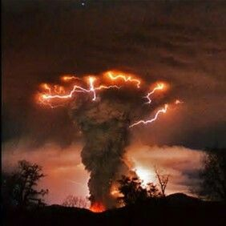

Hello, welcome to the world of photography
"At the best of times, spring hurts depressives."
~Angela Carter.
"If it could only be like this always—always summer, always alone, the fruit always ripe."
Evelyn Waugh
"Autumn carries more gold in its pocket than all the other seasons."
―Jim Bishop
“If winter comes, can spring be far behind?”
― Percy Bysshe Shelley

“I’m young as morning
and fresh as dew.
Everybody loves me
and so do you.”
—Maya Angelou
“You’re off to great places, today is your day. Your mountain is waiting, so get on
your way.”
-Dr. Seuss

“The evening’s the best part of the day. You’ve done your day’s work. Now you can put your feet up and enjoy it.”
-Kazuo Ishiguro
The darker the night, the brighter the stars,
The deeper the grief, the closer is God!”
― Fyodor Dostoevsky
“If there is magic on this planet, it is contained in water.”
— Loren Eiseley
“The use of sea and air is common to all; neither can a title to the ocean belong to any people or private persons, forasmuch as neither nature nor public use and custom permit any possession therof.”
― Queen Elizabeth I
"One can enjoy a wood fire worthily only when he warms his thoughts by it as well as his hands and feet."
-Odell Shepherd
"The Earth is the cradle of humanity, but mankind cannot stay in the cradle forever."
-Konstantin Tsiolkovsky

"fire and air do not mix but they need eachother to survive.some people are like that."
-Colton St clair
"They say blood is thicker than water, but I say ice, can be more solid than blood, when times get cold."
-Anthony Liccione